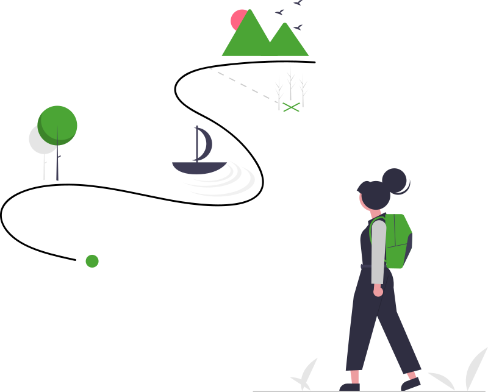

Istituto Comprensivo Acquedolci
Memorie del Territorio
Il centro storico — Acquedolci (ME)
Scheda del luogo
Il luogo

La storia di Acquedolci comincia sulla riva del mare. Molto prima che esistesse il paese di oggi c'era la Marina vecchia: il primo nucleo abitato, un piccolo borgo costiero a est dell'attuale centro. Le case erano poche, abitate soprattutto da contadini e da gente che lavorava il mare, e il borgo dipendeva da San Fratello, il paese in collina.
La sua forza non erano le dimensioni, ma la posizione: stretta fra il mare e l'entroterra, la Marina era il punto in cui tutto passava. Da qui si commerciava con il Mar Tirreno, si sbarcavano i prodotti dei campi, si controllava e si difendeva il litorale. Insomma, una «marina funzionale»: prima un porto e un avamposto, poi — col tempo — un vero centro urbano autonomo. È da questo angolo di costa che è nata Acquedolci.
Acquedolci non è sempre esistita! È nata dal mare: la Marina vecchia era un borgo di contadini e pescatori legato a San Fratello, molto prima che diventasse una città.
Oggi la Marina vecchia conserva ancora l'eco del primo borgo di pescatori e contadini affacciato sul mare.
Per approfondire → Pro Loco di AcquedolciImmagini
Le fotografie della Marina vecchia saranno caricate durante il corso
Storia del territorio